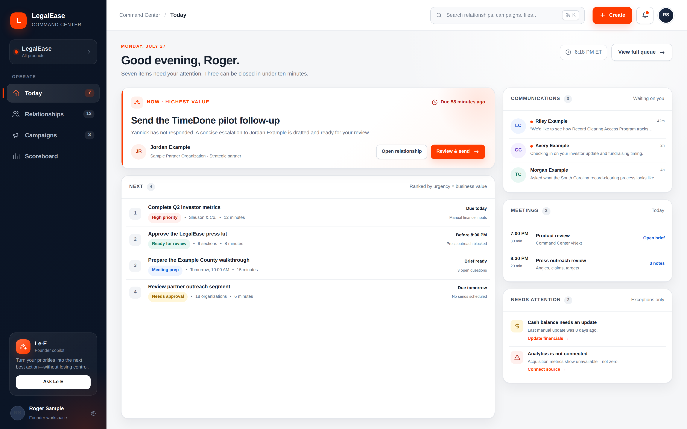
Today
01A ranked operator queue with one highest-value action, next work, communications, meetings, and exceptions.
Solo-operator interface concept · 11 polished screens
Built around Today, Relationships, Campaigns, and Scoreboard—with contextual tools instead of route sprawl.

A ranked operator queue with one highest-value action, next work, communications, meetings, and exceptions.
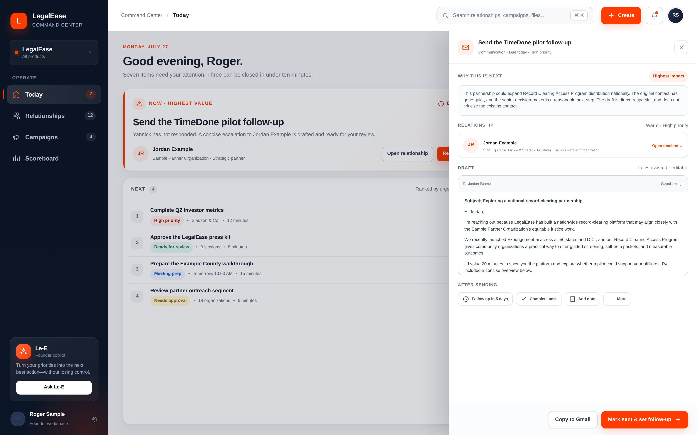
Complete communication work in context without leaving Today.
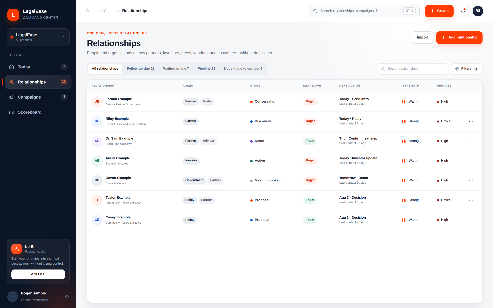
One CRM view across partner, investor, press, vendor, and customer relationships.
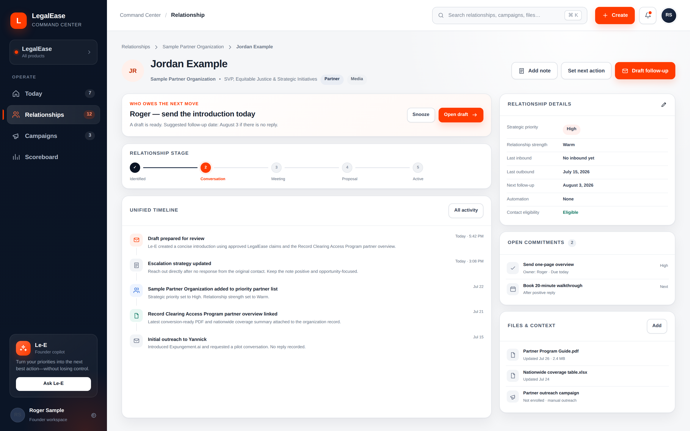
Next move, pipeline stage, commitments, timeline, files, and follow-up in one record.
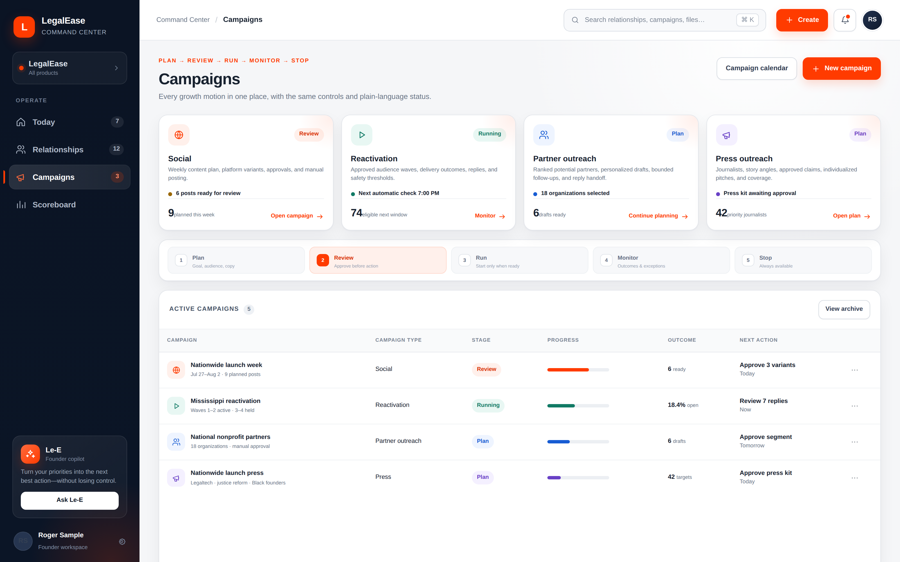
Four campaign lanes governed by one plain-language operating lifecycle.
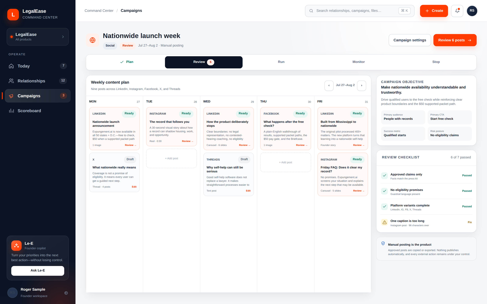
Weekly planning, review gates, platform variants, and manual posting workflow.
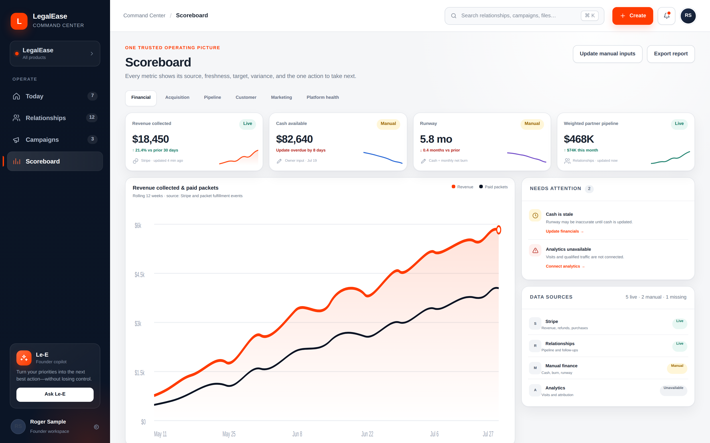
Trusted metrics with sources, freshness, exceptions, and corrective actions.
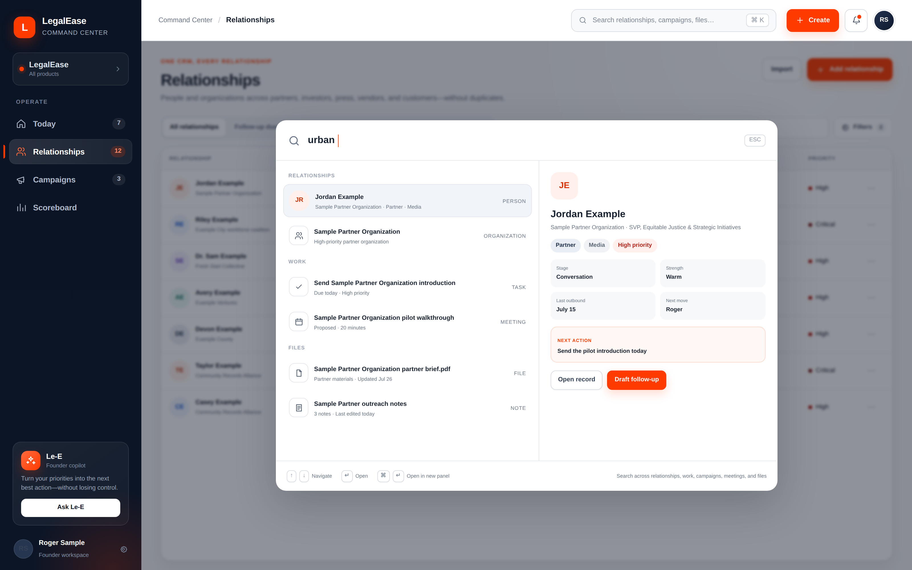
Cross-workspace retrieval with preview and immediate next actions.
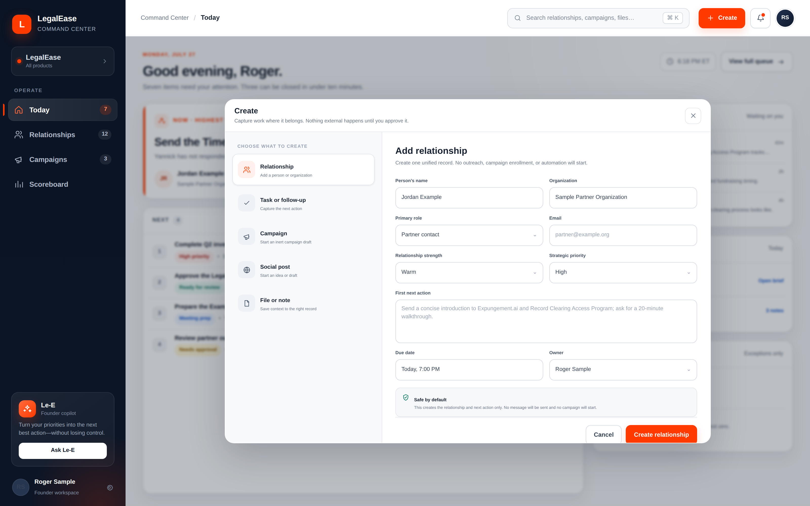
A safe, contextual way to capture relationships, tasks, campaigns, posts, files, and notes.
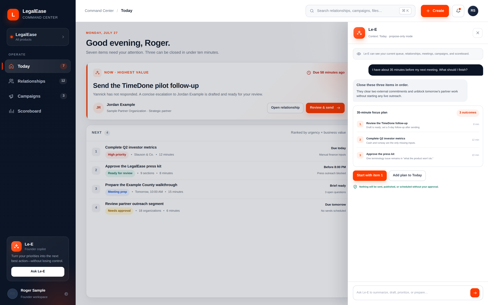
A propose-only founder copilot that prioritizes and prepares work without acting silently.
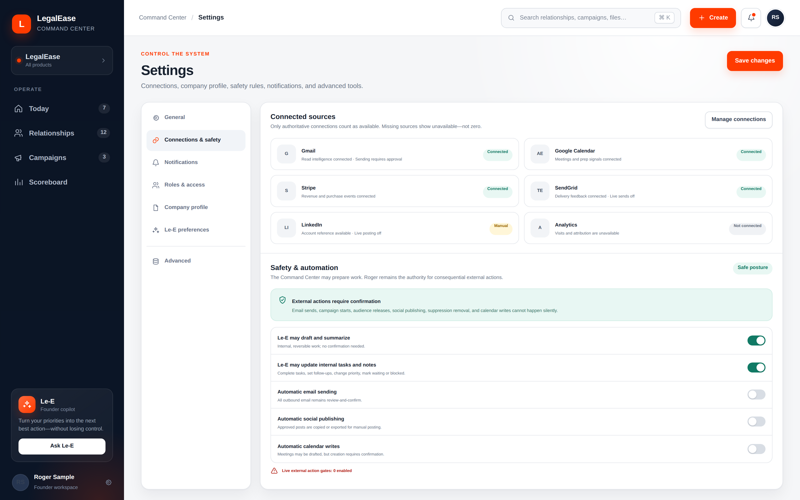
Connections, source truth, automation limits, and explicit external-action gates.
{kind=link}
{kind=link}
{kind=link}
{kind=link}
{kind=link}
{kind=link}
{kind=link}
{kind=link}
{kind=link}
{kind=link}
{kind=link}